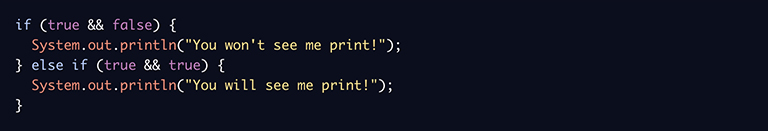
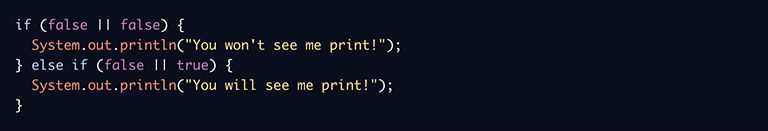
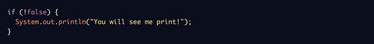

Conditional operators work on boolean values to simplify our code. They’re often combined with conditional statements to consolidate the branching logic.
Conditional-AND, &&, evaluates to true if the booleans on both sides are true.
Conditional-OR, ||, evaluates to true if one or both of the booleans on either side is true.
Logical-NOT, !, evaluates to the opposite boolean value to which it is applied.
